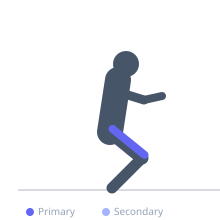
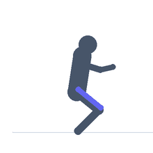

Exercise guide / Sissy Squat
Sissy Squat
The sissy squat is a unique quadriceps exercise in which the knees travel far forward of the toes while the torso leans backward, creating a long moment arm at the knee and intense quadriceps loading through a full range of motion. Unlike most squat variations, the hip does not flex significantly, making this primarily an open-chain knee extension pattern performed without a machine. It places high eccentric stress on the quadriceps and substantial load on the patellar tendon.
Primary muscles
rectus femoris
vastus lateralis
vastus medialis
vastus intermedius
Secondary muscles
Stabilizers
gastrocnemius medial
Equipment
No Equipment (Bodyweight)


Starting position
- Stand with heels slightly elevated (on a small plate or the edge of a step) and hold onto an upright support for balance. Feet are hip-width apart.
Setup
- Have a fixed support nearby (rack upright or door frame) to hold during the movement. Heel elevation (1–2 inches) makes the exercise more accessible and reduces ankle mobility demands.
Steps
- Step 1: Stand tall, holding the support lightly for balance. Begin to lean backward as a unit from the knees — the ankle plantar-flexes and the knee flexes.
- Step 2: Continue leaning backward while allowing the knees to travel far forward. The hips remain relatively extended throughout — do not flex at the hip.
- Step 3: Descend until the thighs are as close to vertical as possible (nearly parallel to the torso, which is leaning far back).
- Step 4: Reverse the motion by contracting the quadriceps powerfully to pull the torso back to vertical.
- Step 5: Return to full standing extension.
Coaching cues
- Keep the hips long — do not fold at the hip
- Lean back as one rigid plank from knee to shoulder
- Squeeze the quads to pull yourself back up
Breathing
- Inhale during the descent. Exhale on the return to standing.
Range of motion
- Maximize the backward lean while keeping hips extended and feet planted. The more range, the greater the quad stretch.
Tempo
- 4-1-2-0 — slow eccentric is essential
Common mistakes
- Hinging at the hip (like a squat) instead of maintaining hip extension throughout
- Moving too fast through the eccentric portion — the sissy squat's value is in its slow, controlled range
- Attempting without sufficient quad strength — high patellar tendon stress makes unpreparedness risky
Safety
- High patellar tendon load — those with patellar tendinopathy should consult a clinician before performing
- Avoid the loaded version until bodyweight is controlled comfortably
- Heel elevation reduces the ankle dorsiflexion requirement and reduces risk of balance loss
Training
- strength: 5–10 reps
- hypertrophy: 10–20 reps
- endurance: 15–25 reps
- strength: 3–4 sets
- hypertrophy: 3–4 sets
- endurance: 2–3 sets
- Rest: {'strength': 120, 'hypertrophy': 60, 'endurance': 45}